La oleada especulativa que se ha desatado en Ecuador tras el anuncio de que se " dolarizará " la economía continúa en aumento y hace pensar que los controles emprendidos por el Gobierno resultan insuficientes , según la Tribuna Ecuatoriana de Consumidores y Usuarios.
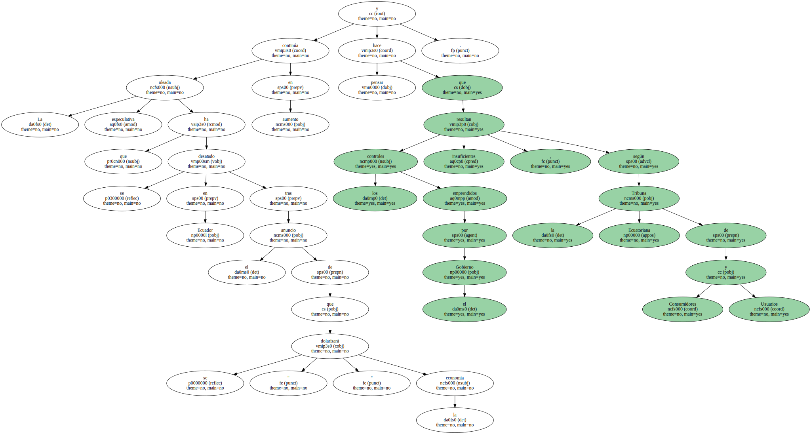Aunque todavía no hay datos oficiales , a través de denuncias puntuales se constatan aumentos del 50 y del 100 por ciento y hasta del 400 por ciento , dijo a EFE la directora de la Tribuna , María José Troya.
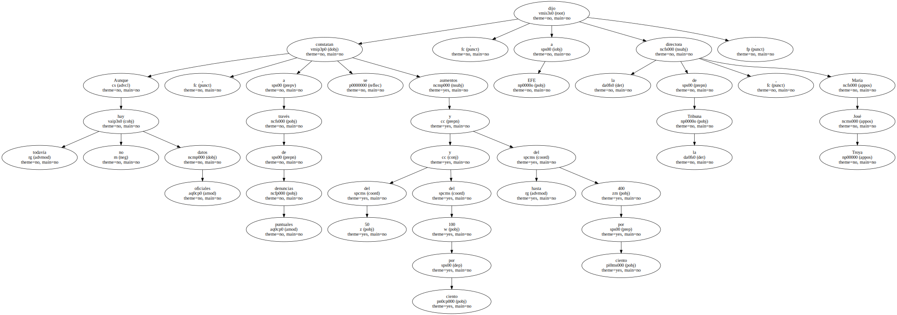Considera que los controles son aún muy reducidos y se debe apuntar a la fijación , al menos momentánea , de los precios de los productos básicos.

El presidente ecuatoriano , Jamil Mahuad , anunció ya que fijará una lista de precios de productos , basada en los vigentes el 31 de diciembre pasado , para frenar la ola especulativa que ha disparado los costes de varios bienes de consumo.
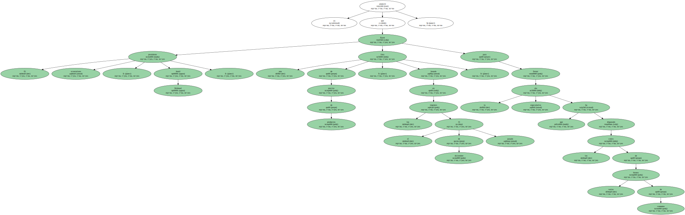Mientras , los controles se han registrado con mayor fuerza en la provincia del Guayas , cuya capital es Guayaquil - nudo económico de Ecuador - donde se ha sancionado a una fábrica y se han descubierto locales donde se almacenaba gran cantidad de productos con los pesos adulterados y adquiridos antes del anuncio de la " dolarización ".
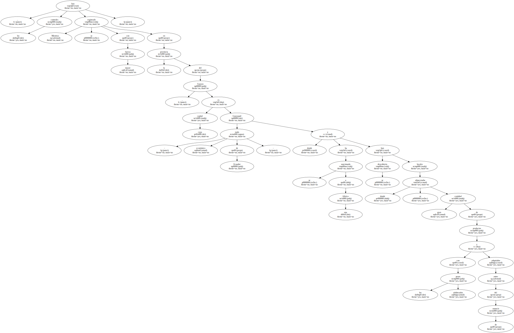El aumento de los precios sobrepasa con creces los controles de las autoridades encargadas , mientras los productores y comerciantes deslindan responsabilidades y los atribuyen a los intermediarios.
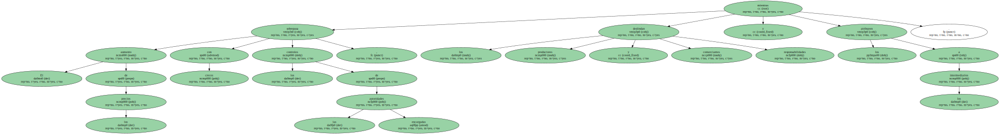Los incrementos que más han afectado a los consumidores son los del azúcar , arroz y aceite , mientras que los detergentes , por ejemplo , han duplicado sus precios , al igual que algunas medicinas.
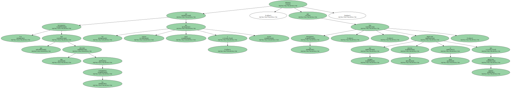Una monja , por ejemplo , denunció que un tanque grande de pintura que el año pasado compró en 190.000 sucres ( 7,6 dólares ) ahora cuesta 970.000 sucres ( 38,8 dólares ).
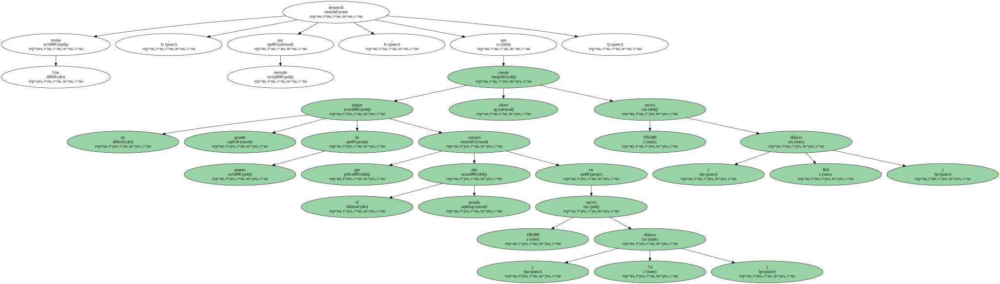A diario se escuchan quejas de la ciudadanía por el alto coste de la vida y la constante pérdida del valor adquisitivo del sucre ( moneda local ) , que será relegado a un segundo plano con la " dolarización ".
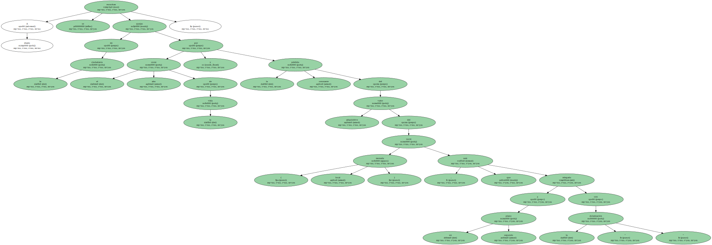Pero , también casi a diario , el Gobierno asegura que no hay razón alguna para que los precios sigan elevándose , y según sus cálculos , incluso deberían bajar.

Pero los indígenas no comprenden esto y así tienen en la falta de acciones gubernamentales más firmes contra la especulación otra justificación para el levantamiento nacional que adelantan para esta semana , principalmente en demanda de la renuncia de los tres poderes del Estado.
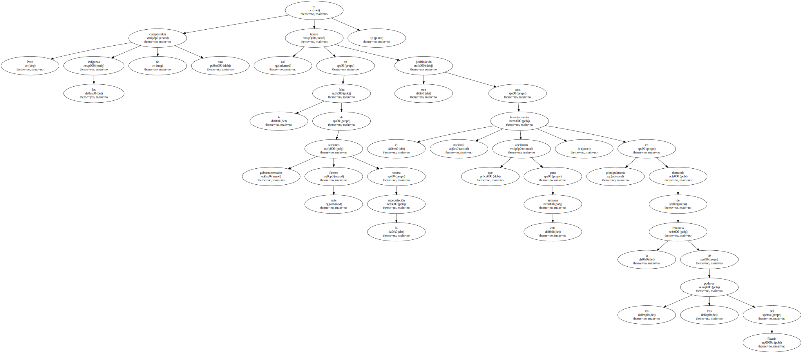La aseveración de Mahuad sobre que la anunciada " dolarización " no es la culpable de la especulación , contrasta con la realidad , pues desde el 9 de enero , cuando se anunció esta medida , los precios de varios productos emprendieron una carrera alcista , según Troya.
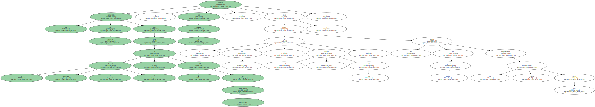Mahuad advirtió que adoptaría acciones para controlar los precios y el sólo anuncio le significó un sonoro aplauso en el Parlamento cuando rindió su primer mensaje de labores a la Nación y despertó las esperanzas de mejores días para la mayoría de los habitantes.
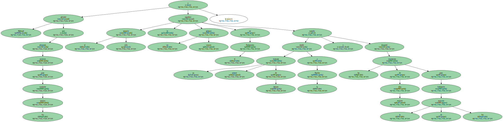Sin embargo , el tiempo pasa , los costes siguen subiendo y con ellos el malestar de la población , que el Gobierno intenta aplacar con el análisis de la posible eliminación de aranceles a productos básicos con el fin de abrir paso a la importación.
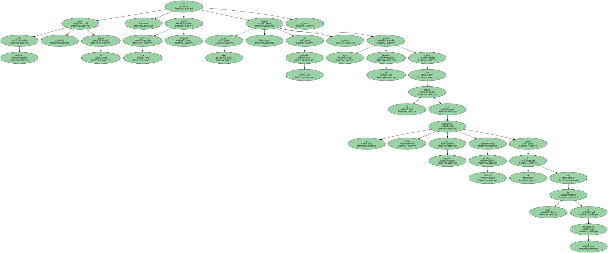El presidente de la Federación de Cámaras de Industriales de Ecuador , Raúl Mendizábal , dijo a EFE que los sectores productivos tratan de ser competitivos y puntualizó que " los aranceles deberían haber sido eliminados desde hace mucho tiempo en lo que se refiere a materias primas , productos intermedios y elementos hacia la producción ".
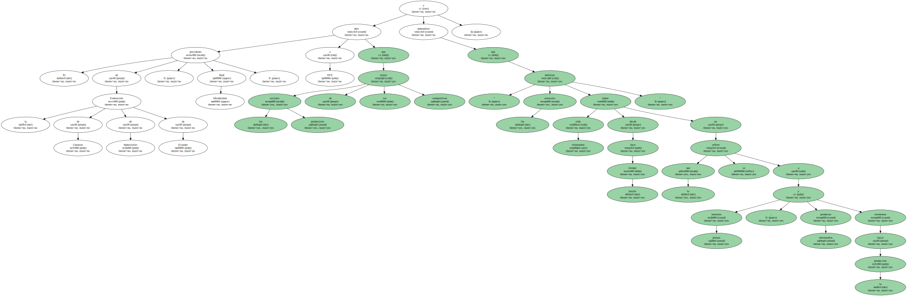Pero los consumidores están preocupados pues no acaban de entender las bondades promocionadas por el Ejecutivo sobre el sistema de la " dolarización " , cuyo proceso de aplicación es tan incierto aún que ha generado más preguntas que respuestas , pues fue presentado como uno de los mecanismos para salir de la crisis.
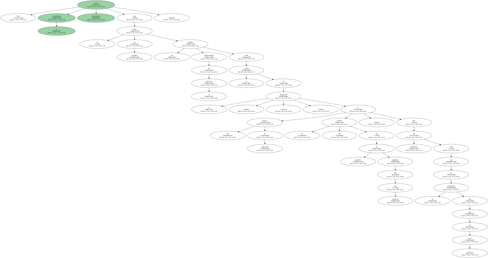Paradójicamente , al menos de momento , la crisis se ha agudizado en los hogares , en muchos de los cuales se ha debido replantear el esquema alimenticio y se ha contraído en general el consumo.
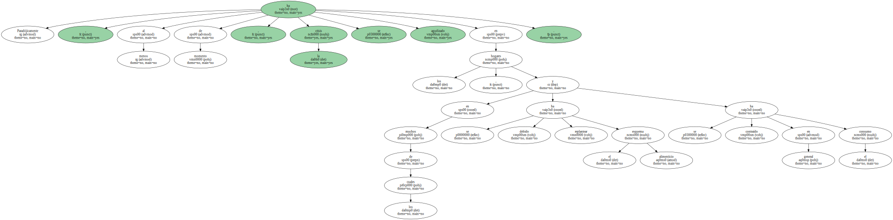También está preocupada la Cámara de la Primera Zona de Agricultura de Ecuador , que advirtió sobre el peligro de un colapso en el aparato productivo nacional si el Ejecutivo elimina los aranceles a las importaciones.
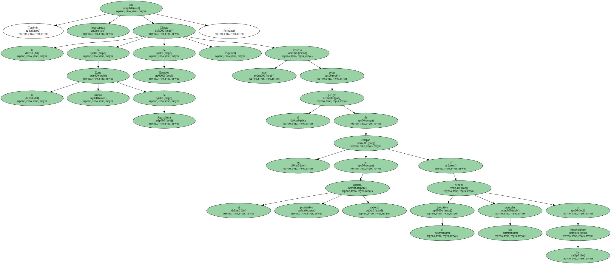